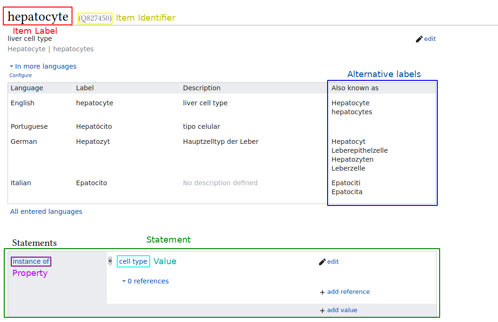
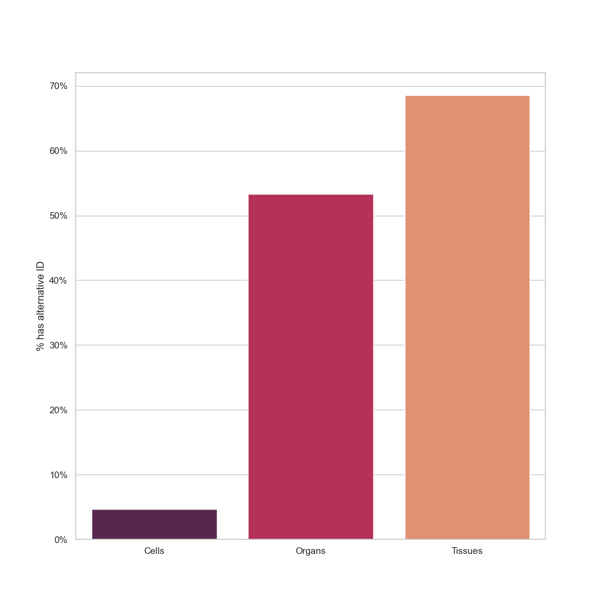
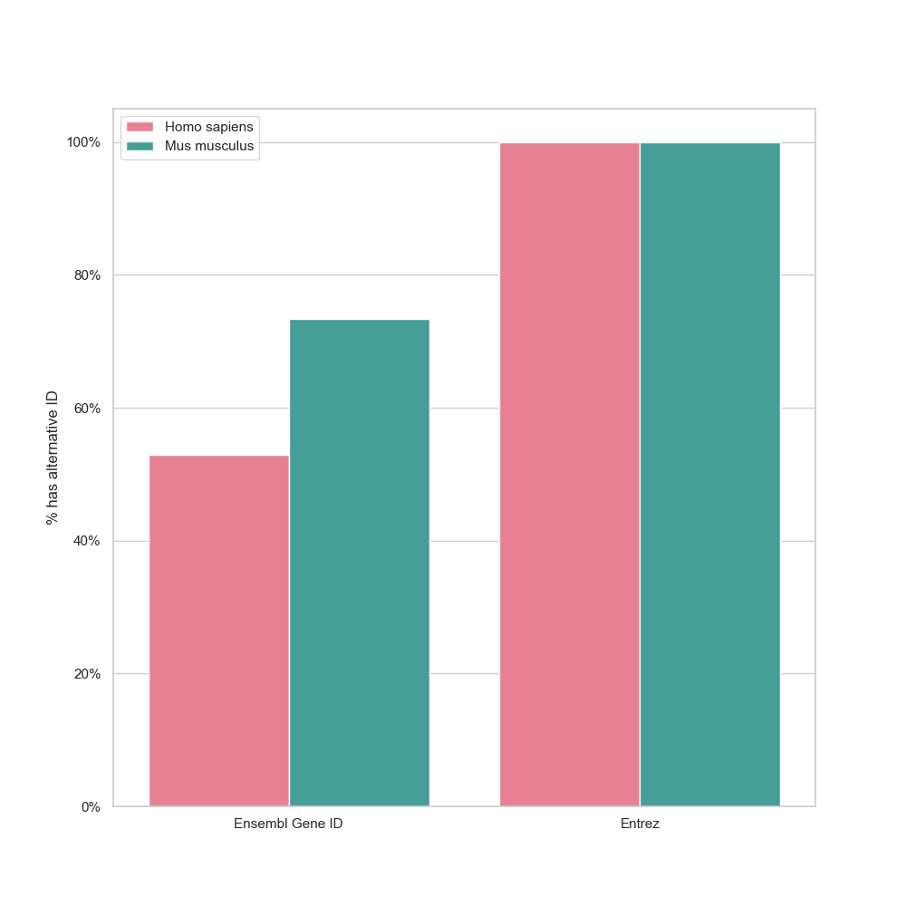
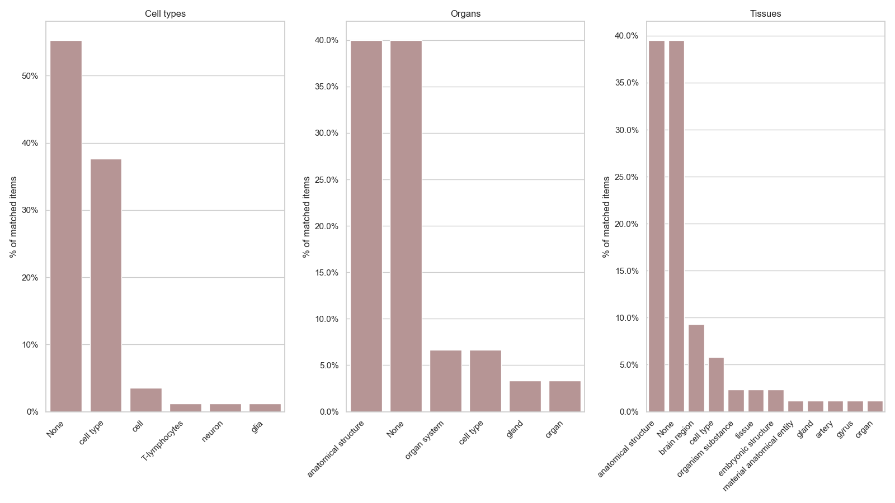
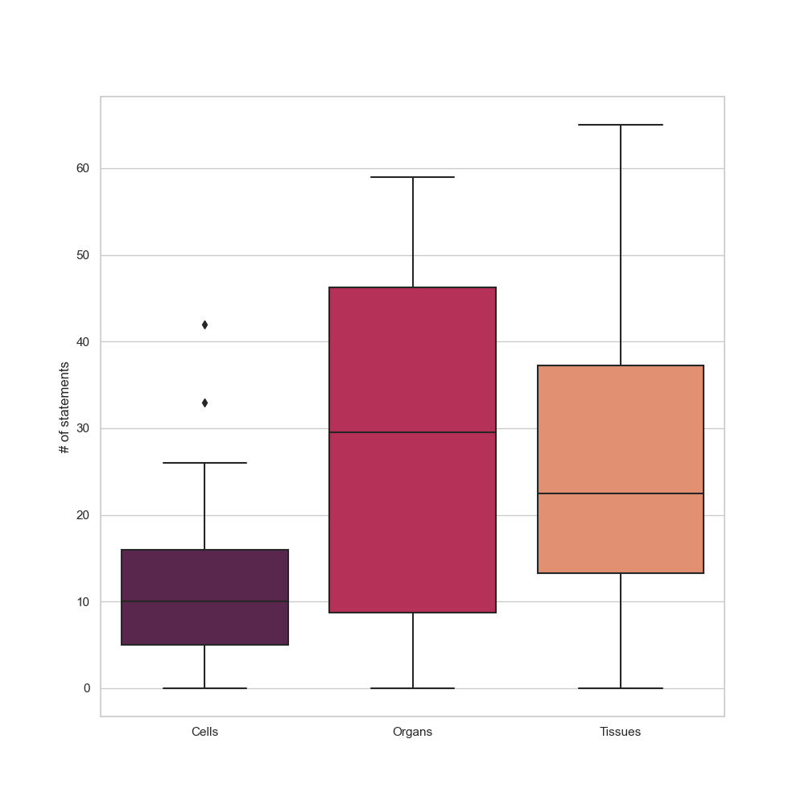
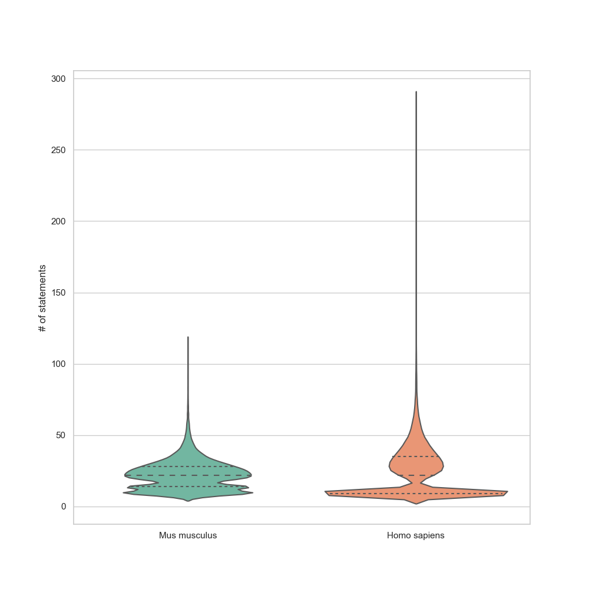
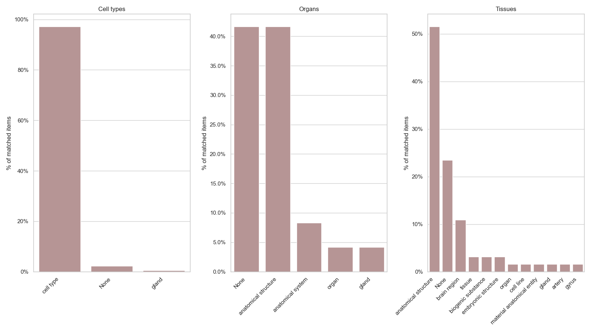

João Vitor Ferreira Cavalcante 0000-0001-7513-7376
· jvfe
Bioinformatics Multidisciplinary Environment, Federal University of Rio Grande do Norte
Tiago Lubiana 0000-0003-2473-2313
· lubianat
Computational Systems Biology Laboratory, University of São Paulo
Abstract
PanglaoDB is a database of cell type markers widely used for single cell RNA sequencing data analysis. The genes, tissues, organs and cell types mentioned in the database, however, are described by free text and lack identifiers. Wikidata, is a freely editable knowledge graph database useful for the integration of biomedical knowledge. Its linked data model can improve significantly the handling and distribution of scientific information.
In this study we explore the feasibility of enriching PanglaoDB with Wikidata identifiers. We accessed the state of reconciliation at the beginning of the project, comparing the modelling of genes, tissues, organs and cell types on Wikidata. Taking advantage of the openess of Wikidata, we leveraged our initial analysis to contribute towards Wikidata completeness and enable full reconciliation. As a final product, we released the first SPARQL endpoint for cell marker information, in a 5-star open linked data format. We hope that this study encourages further reconciliations of databases to Wikidata.
PanglaoDB [1][2] is a public database that contains data and metadata on hundreds of single-cell RNA sequencing experiments, providing extensive information on cell types, genes and tissues, as well as manually and community curated cell type markers (Tables 1 and 2). It also provides a rich web user interface for easy data acquisition, including database dumps for bulk downloads.
Table 1: Database statistics for each species in PanglaoDB, as of 31st of August, 2020.
Despite its usefulness for the community, the database is on a 3-star category for Linked Open Data [3] as it does not use open standards from W3C (RDF and SPARQL). To make it 5-star, it needs to be also linked to external data via common identifiers.
The OBO Foundry provides a rich collection of linked biological identifiers [4]. However, reconciliation to OBO is challenging, as there are many ontologies, each with slightly different contribution guidelines. For that reason, we decided to reconcile PanglaoDB to Wikidata, which allows simple creation of new terms, provided they follow Wikidata`s notability criteria[5].
Wikidata
Wikidata [6] is an open, freely editable, knowledge graph database within the semantic web [7] that stores knowledge across a multitude of domains,
such as arts, history, chemistry and biology, using an item-property-value linked data model (Figure 1). It is easy to use and edit, by both humans and machines, with a rich web user interface and wrapper packages available
in common programming languages such as R and Python. All the data within Wikidata is linked and inherently public domain, thus, it presents a great opportunity to make scientific data more FAIR (Findable, accessible, interoperable and reusable), as well as provides the necessary tools to curate and develop ontologies.
Figure 1: Wikidata item example, showing item hepatocyte (Q827450), the labels change according to the user’s language, but each item has a universal identifier, called QID.
Several advances towards biological data integration and biological data analysis in Wikidata have been made before, yielding positive
results [8][9] and showcasing it’s potential for bioinformatics-related analyses, such as drug repurposing and ID conversion [10]. Wikidata has been proposed as a unified base to gather and distribute biomedical knowledge, with more than 50 000 human gene items indexed and hundreds of biomedical-related properties [11].
Wikidata, however, is a work in progress, and might need extensive improvement. For example, as of August 2020, cell type information is still very scarse, with only 264 items being categorized as “instances of cell types (Q189118)” (https://w.wiki/b2w). Of those, only nine have a “Cell Ontology ID”[12] (P7963) associated, and most have a varying amount of statements (Table 3). As an additional problem, there are also 23 items being categorized as “instances of cell (Q7868)” (https://w.wiki/b2x), illustrating the absence of any formal data model.
Table 3: As of August 2020, Wikidata items regarding cell types have a varying amount of information, with most having very few statements.
Cell type Item
Number of statements
red blood cell (Q37187)
48
myocyte (Q428914)
18
mesenchymal cell (Q66568500)
2
This work has the dual goal of re-releasing PandlaoDB in a 5-star Linked Open Data Format and improving the modelling of the necessary concepts on Wikidata.
Methodology
Data acquisition
Gene data from Wikidata was acquired using the Wikidata Query Service [13]
- https://w.wiki/bWc for Homo sapiens genes and https://w.wiki/bWe for Mus musculus genes.
Data for quality acessment from PanglaoDB was acquired through their metadata database dump repository[14].
The markers dataset was dowloaded manually from PanglaoDB’s website (https://panglaodb.se/markers/PanglaoDB_markers_27_Mar_2020.tsv.gz). It contains 15 columns and 8256 rows.
For the reconciliation, only the columns species, official gene symbol and cell type were used.
All data used was handled using the Pandas[15] library,
with the Seaborn[16] and Matplotlib[17] libraries being used for plotting.
Automated matching
The metadata from PanglaoDB on cell types, tissues (including germ layers) and organs was matched to Wikidata items using the reconciler[18] library,
further matching was done using a custom stemming function on the item labels, via PorterStemmer from the NLTK library [19].
Matches were considered perfect if the reconciliation service or the stemming function returned a value of “match” equals to “True”.
Matches were manually analysed for false matches, such as items with same labels but used for different concepts.
Gene data was matched manually using a Pandas [15] inner merge, since both data sources contained identifiers, which should be the same.
Item quality assessment
Wikidata items were assessed for their quality by their number of statements,
which were acquired using a custom wrapper on the MediaWiki API [20] and,
in the case of gene data, via Wikidata’s own query service, as stated in the Data acquisition section.
Furthermore, items were also assessed by the presence of external identifiers - all of which are Wikidata properties:
Ensembl Gene[21] (P594)
and Entrez Gene[22] (P351) IDs for genes,
Cell Ontology[12] (P7963) IDs for cell types
and Uberon[23] (P1554) IDs for organs and tissues.
Class creation on Wikidata
Classes corresponding to species-neutral classes were retrieved from Wikidata manually using Wikidata’s Graphic User Interface. The dictionay matching terms in PanglaoDB to Wikidata identifiers were stored in a reference csv table.
Cell types which were not represented on Wikidata were added to the database via the graphical user interface (https://www.wikidata.org/wiki/Special:NewItem) and logged in the reference table.
Species-specific cell types for human and mouse cell types were created for every entry in the reference table, connected to the species-neutral concept via a “subclass of” property (e.g. every single “human neutrophil” is a also “neutrophil” ).
The reference sheet for species-neutral concepts was used to obtain the “subclass of” for every newly created item. Each item was labeled either “human” + the label for the neutral cell type, described as “cell type found in Homo sapiens” and tagged with the statement “found in taxon” Homo sapiens. An analogous framework was used for mouse cell types, assuming that mouse in PanglaoDB meant Mus musculus. Batch creations were added to Wikidata via the tool Quickstatements (https://quickstatements.toolforge.org/#/).
All genes in PanglaoDB either were already present on Wikidata or resolved to multiple entities and thus were excluded.
Property creation on Wikidata
Integration to Wikidata
The reconciled dataset was uploaded to Wikidata via the Wikidata Integrator python package (https://github.com/SuLab/WikidataIntegrator), a wrapper for the Wikidata Application Programming Interface. The details of the integration can be seen in the accompanying Jupyter notebook.
Besides the Wikidata Dumps, Wikidata provides an SPARQL endpoint with a Graphical User Interface (https://query.wikidata.org/). Updated data was immediately accessible via this endpoint, enabling integrative queries integrated with other database statements.
Results
Wikidata reconciliation - initial look
Entities from PanglaoDB, that is, cell types, genes, tissue types and organs, were matched with Wikidata items,
matching summary can be seen on Table 4.
Table 4: Summary of the matched entities from PanglaoDB.
# of total items
# of unique matches
% of total items that were matched
Cells
215
81
37.67%
Tissues
246
85
34.55%
Organs
29
22
75.86%
Human Genes
58216
35423
60.84%
Mouse Genes
53793
25124
46.70%
Analysis of item quality - initial look
Only Homo sapiens genes and Organs reconciled more than 50%.
In the case of genes, this is probably due to the Gene Wiki initiative [24],
a long-running project to improve biological information in Wikipedia and its sister-projects, including Wikidata.
This is further illustrated by Figure 3, in which we can see that all Mus musculus gene items -
and nearly all Homo sapiens items -
analysed had the Entrez ID alternative identifier present -
Most of the data from the Gene Wiki project came from NCBI, creator and maintainer of Entrez.
Nevertheless, there are still many gene items without an “Ensembl Gene ID” property,
showcasing the need for further work in migrating this important source of information.
In the case of Organ data, there was a high number of matches both due to the fact that there were only a few number of items, but also
since most Organ entities have Wikipedia pages, that are, therefore, cross-linked using Wikidata, requiring the creation of these items.
Regarding alternative identifiers, what was observed for genes cannot be said for histological entities,
while there is significant progress in integrating UBERON IDs, there is near to no items with a Cell Ontology ID property (Figure 2).
Figure 2: Percentage of matched histological items that had alternative identifiers,
UBERON IDs for Tissues and Organs, Cell Ontology IDs for Cell types.
Figure 3: Percentage of matched gene items that had alternative identifiers, Entrez ID and Ensembl Gene ID, divided by species.
Figure 4: Percentage of reconciled entities, divided by which item type they belong to. Most reconciled items don‘t count with the P31 property.
A significant proportion of the matches we could acquire for histological data didn’t contain in their data model an “instance of” (P31) property,
this illustrates an extremely concerning fact: Although we could still match around 30 percent of the data -
in the case of Cell types and Tissues -
this data was probably “low-quality”, that is, hard to find and even harder to obtain insights from,
we can affirm this since the P31 property is the basis for most items in Wikidata,
it’s the most intuitive way to perform queries against their database and to annotate their items.
Furthermore, there is a significant disparity between histological data and gene data:
while we could only match around 37% of Cell types from PanglaoDB, and of those 55% didn’t have P31,
we matched 60% of Homo sapiens genes, and all of them had P31.
This disparity is not clearly shown when looking exclusively at the number of statements for these items
(Figures 5 and 6), but it shows there is still a great amount of missing information
for biological data, in particular in regards to cell types.
Figure 5: The distribution of the number of statements of the matched histological entities.
Cell types performed the lowest.
Figure 6: The distribution of the number of statements for matched gene items, divided by species.
Improving Wikidata
Adding species specific terms
Adding a new property
Adding missing items
TBD
Improving interoperability
TBD
Wikidata reconciliation - final look
After the aforementioned improvements were made,
data from PanglaoDB was reconciled once again,
the automatic classification method was able to detect most cell types matches for most cell types on PanglaoDB matches (Table
5). The non-unique matches are likely due to synonym or very similar aliases used for different cell type concepts. Nevertheless, it is an evidence that our work improved cell type content on Wikidata, and will arguably facilitate the reconciliation of other cell-type related resources.
Table 5: Summary of matched PanglaoDB entities after improvements were made.
# of total items
# of unique matches
% of total items that were matched
Cells
215
173
80.4651
Tissues
246
63
25.6097
Organs
29
18
62.0689
Human Genes
58216
35423
60.8475
Mouse Genes
53793
25124
46.705
Noticeably, the proportion of automatic matches for other entity types (tissues and organs) seems reduced in relation to the first assessment (35% to 25% and 76 to 62%). These entities were not targeted by our work, but as Wikidata is a living resource, modifications in the database, such as reclassification of entities or adding of other similar concepts, may have reduced the performance of our simple reconciler.
Analysis of item quality - final look
As can be gathered from Figure 7, nearly all cell type items have the appropriate “instance of cell type” statement, with only 4 items still missing said statement and one item being classified as an “instance of gland”.
This is a considerable advance in improving the quality of cell type data in Wikidata, as having this simple statement will make these items easier to find and be expanded upon.
Figure 7: Percentage of reconciled entities gathered during the second and final reconciliation, divided by which item type they belong to.
Wikidata SPARQL queries enabled by the integration
Now that the PanglaoDB is released as Linked Open Data, we can make queries that were not possible before, including
federated queries with other biological databases, such as Uniprot [25]
and Wikipathways [26].
Due to previous similar reconciliation projects, Wikidata already contains information about genes, including their relations to Gene Ontology (GO) terms,
something that led to the development of an R package, go2cell [27],
that facilitates interconnection between cell types and GO terms via their markers.
PanglaoDB’s integration to the Wikidata ecosystem allows us to ask a variety of questions. The next section headers exemplify such questions.
“Which human cell types are related to neurogenesis via their markers?”
As expected, the query below retrieved a series of neuron types, such as “human purkinje neuron” and “human cajal-retzius cell.” It did, however, also retrieved non-neural cell types such as the “human loop of henle cell, a kidney cell type, and”human osteoblast. These seemingly unrelated cell types markedly express genes that are involved in neurogenesis, but that does not mean that they are involved with this process. This reinforces the idea that one needs to be careful when using curated pathways to enrich one’s analysis, as false positives abound.
The molecular process that gene products take part depends on the cell type. The SPARQL query below enables us to seamlessly compare Gene Ontology processes with cell marker data, providing a fruitful sandbox for generation of hypothesis and exploration of the biomedical knowledge landscape.
Query for cell types related to neurogenesis
“Which cell types express markers associated to Parkinson`s disease?”
Besides integration with Gene Ontology, Wikidata reconciliation makes it possible to complement the marker gene info on PanglaoDB with information about diseases. This integration is of biomedical interest, as there is a quest for detailing of mechanisms that link genetic associations and the diseases themselves.
“Disease genes” are often compiled from Genomic Wide Association Studies, which look for sequence variation in the DNA. These studies are commonly blind to the cell types related to the pathophysiology of the disease. In the query below, we can see cell types that are marked by genes genetically associated with Parkinson’s disease. Even considering the false positives (as per the previously mentioned multifunctional nature of genes) this kind of overlook can aid domain experts to come up with novel hypothesis.
Query for cell types related to Parkinson’s disease
Which diseases are associated with the markers of pancreatic beta cells?
We can check the cell-type to disease relation in both ways. Scientists that study specific cell types (and not necessarily specific diseases) might be interested in knowing which diseases are related to their cell type of interest. In the sample query below, I looked for the diseases linked to the human pancreatic beta cells, which play an important role in controlling blood sugar levels. Reassuringly, top hits associated with markers included
obesity and type-2 diabetes. Other diseases retrieved, such as Huntington disease-like 2 don’t bear a clear link with sugar function, and might merit a further look by a domain expert to see if there are any hypothesis worth pursuing.
Query for cell types related to Parkinson’s disease
In this work, we re-released the knowledge curated in PanglaoDB on Wikidata, connecting it to the semantic web. Each cell-type/marker statement was added to Wikidata with a pointer to PanglaoDB and a citation of the article, providing proper provenance. At the same time, we documented the process of database integration to Wikidata, providing a blueprint for future efforts.
It is important to note that not all data on PanglaoDB was added to Wikidata. Fine-grained, database-specific details were too granular for a general-purpose database like Wikidata (e.g. the sensitivity and specificity attached to each marker-cell type pair). Eventhough, these data could be released in RDF format and be connected to independent SPARQL endpoints (as done in the Bio2RDF effort [28]), we focused on integration to Wikidata to take advantage of the built-in integration with various types of knowledge, as well as the tooling developed by the Wikidata community.
Linking biological with Wikidata allows out-of-the-box integrative SPARQL queries, as many biomedical ontologies and datasets have been already integrated to Wikidata, and are available in Wikidata’s graph. Besides the well-known advantages of having data linked to the Linked Open Data cloud, the Wikidata integration provides user-friendly interfaces for the data. That includes both navigable html pages of classes and properties (e.g. https://www.wikidata.org/wiki/Q67801129) as well as an SPARQL Query Service with user-friendly modifications to ease queries for beginners (https://query.wikidata.org/) with helper pages for learning SPARQL (https://www.wikidata.org/wiki/Wikidata:SPARQL_tutorial) or even requesting queries (https://www.wikidata.org/wiki/Wikidata:Request_a_query).
Wikidata also makes it easy for users to contribute. Wikidata allows editions directly in the Graphical User Interface, acessible for domain experts without programming or ontology training. For those interest in continuous integration, the Python module Wikidata Integrator facilitates for python users to reconcile databases to Wikidata, and it has been used to build bots for several different biological databases [9].
This work exemplifies the power of releasing Linked Open Data via Wikidata, and provides the biomedical community with the first semantically accessible, 5-star LOD dataset of cell markers. It also paves the way for Wikidata reconciling of other databases for cell-type markers, such as CellMarker [29], labome [30], CellFinder [31] and SHOGoiN/CELLPEDIA [32]). The approach can in essence be applied to any knowledge set of public interest, providing a low-cost and low-barrier platform for sharing biocurated knowledge in gold standard format. We hope that community will keep improving marker and overall biological content on Wikidata, and that the interlinked marker information will be useful for researchers all over the world.
General Ideas
Temporary file containing ideas for the project. Interesting references and concepts.
med2rdf[33] is a project to migrate biomedical knowledge bases to RDF format,
facilitating integration with the semantic web.
15 years ago, in the original Cell Ontology paper, they mention the idea to integrate their knowledge with gene expression databases,
something not done as far as we know [34]
8. Wikidata: A platform for data integration and dissemination for the life sciences and beyond
Elvira Mitraka, Andra Waagmeester, Sebastian Burgstaller-Muehlbacher, Lynn M Schriml, Andrew I Su, Benjamin M Good Cold Spring Harbor Laboratory (2015-11-16) https://doi.org/gg9dk4
DOI: 10.1101/031971
9. Wikidata as a knowledge graph for the life sciences
Andra Waagmeester, Gregory Stupp, Sebastian Burgstaller-Muehlbacher, Benjamin M. Good, Malachi Griffith, Obi Griffith, Kristina Hanspers, Henning Hermjakob, Toby Hudson, Kevin Hybiske, … Andrew I. Su eLife (2020-03-17) https://www.wikidata.org/wiki/Q87830400
DOI: 10.7554/elife.52614
10. Wikidata as a knowledge graph for the life sciences
Andra Waagmeester, Gregory Stupp, Sebastian Burgstaller-Muehlbacher, Benjamin M Good, Malachi Griffith, Obi L Griffith, Kristina Hanspers, Henning Hermjakob, Toby S Hudson, Kevin Hybiske, … Andrew I Su eLife (2020-03-17) https://doi.org/ggqqc6
DOI: 10.7554/elife.52614 · PMID: 32180547 · PMCID: PMC7077981
11. Wikidata: A large-scale collaborative ontological medical database
Houcemeddine Turki, Thomas Shafee, Mohamed Ali Hadj Taieb, Mohamed Ben Aouicha, Denny Vrandečić, Diptanshu Das, Helmi Hamdi Journal of Biomedical Informatics (2019-11) https://doi.org/gg9dnt
DOI: 10.1016/j.jbi.2019.103292 · PMID: 31557529
12. The Cell Ontology 2016: enhanced content, modularization, and ontology interoperability.
Alexander D Diehl, Terrence F Meehan, Yvonne M Bradford, Matthew H Brush, Wasila M Dahdul, David S Dougall, Yongqun He, David Osumi-Sutherland, Alan Ruttenberg, Sirarat Sarntivijai, … Christopher J Mungall Journal of biomedical semantics (2016-07-04) https://www.ncbi.nlm.nih.gov/pubmed/27377652
DOI: 10.1186/s13326-016-0088-7 · PMID: 27377652 · PMCID: PMC4932724
15. pandas-dev/pandas: Pandas 1.0.0
Jeff Reback, Wes McKinney, Jbrockmendel, Joris Van Den Bossche, Tom Augspurger, Phillip Cloud, Gfyoung, Sinhrks, Adam Klein, Matthew Roeschke, … Thomas Kluyver Zenodo (2020-01-29) https://doi.org/gg9gtt
DOI: 10.5281/zenodo.3630805
16. mwaskom/seaborn: v0.11.0 (Sepetmber 2020)
Michael Waskom, Olga Botvinnik, Maoz Gelbart, Joel Ostblom, Paul Hobson, Saulius Lukauskas, David C Gemperline, Tom Augspurger, Yaroslav Halchenko, Jordi Warmenhoven, … Thomas Brunner Zenodo (2020-09-08) https://doi.org/ghcq2j
DOI: 10.5281/zenodo.4019146
17. matplotlib/matplotlib: REL: v3.3.2
Thomas A Caswell, Michael Droettboom, Antony Lee, John Hunter, Elliott Sales De Andrade, Eric Firing, Tim Hoffmann, Jody Klymak, David Stansby, Nelle Varoquaux, … Paul Ivanov Zenodo (2020-09-15) https://doi.org/ghcq2k
DOI: 10.5281/zenodo.4030140
24. Wikidata as a semantic framework for the Gene Wiki initiative
Sebastian Burgstaller-Muehlbacher, Andra Waagmeester, Elvira Mitraka, Julia Turner, Tim Putman, Justin Leong, Chinmay Naik, Paul Pavlidis, Lynn Schriml, Benjamin M Good, Andrew I Su Database (2016-03-17) https://doi.org/f9bbk9
DOI: 10.1093/database/baw015 · PMID: 26989148 · PMCID: PMC4795929
28. Bio2RDF Release 2: Improved Coverage, Interoperability and Provenance of Life Science Linked Data
Alison Callahan, José Cruz-Toledo, Peter Ansell, Michel Dumontier, Michel Dumontier Lecture Notes in Computer Science (2013-01-01) https://www.wikidata.org/wiki/Q56989268
DOI: 10.1007/978-3-642-38288-8_14
29. CellMarker: a manually curated resource of cell markers in human and mouse
Xinxin Zhang, Yujia Lan, Jinyuan Xu, Fei Quan, Erjie Zhao, Chunyu Deng, Tao Luo, Liwen Xu, Gaoming Liao, Min Yan, … Yun Xiao Nucleic Acids Research (2019-01-01) https://www.wikidata.org/wiki/Q56984510
DOI: 10.1093/nar/gky900
31. CellFinder: a cell data repository
Harald Stachelscheid, Stefanie Seltmann, Fritz Lekschas, Jean-Fred Fontaine, Nancy Mah, Mariana Lara Neves, Miguel A. Andrade-Navarro, Ulf Leser, Andreas Kurtz Nucleic Acids Research (2013-12-03) https://www.wikidata.org/wiki/Q28660708
DOI: 10.1093/nar/gkt1264
 0000-0001-7513-7376
·
0000-0001-7513-7376
·  jvfe
jvfe